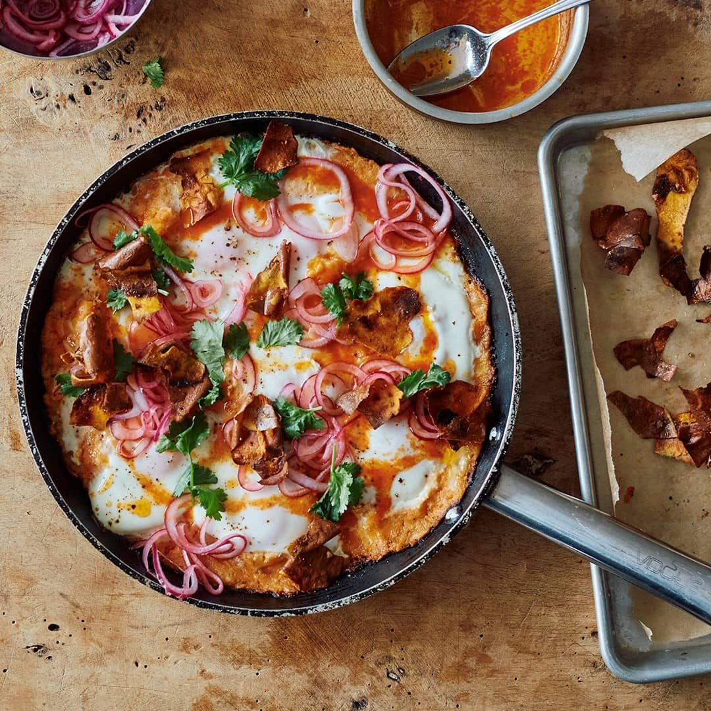

Sweet Potato Shakshuka

Before you start heat the oven to 200°C fan.
Ingredients
Method
- Prep Sweet Potatoes: Preheat the oven to 200°C fan. Poke the sweet potatoes (1kg) all over with a fork and place them on a parchment-lined baking tray. Bake for 45–50 minutes until cooked through and softened. Set aside to cool and turn the oven down to 180°C fan.
- Pickle Onion: In a small bowl, mix together the onion (1 small red, 100g), lemon juice (1 tbsp), and a pinch of salt. Set aside.
- Crisp Skins: Remove the cooked potato skins and tear them into roughly 4cm pieces. Transfer the potato flesh to a large bowl. Place the skins back on the baking tray and toss with olive oil (1 tbsp), salt (¼ tsp), and a good grind of pepper. Bake for 8 minutes, or until nicely coloured and starting to crisp up. Set aside.
- Make Mash: Use a fork to mash the potato flesh until smooth. Add the cheddar (150g), garlic (3 cloves), cumin (1 tsp), olive oil (another tbsp), the remaining lemon juice (1 tbsp), salt (1 tsp), and a generous grind of pepper. Mix to combine.
- Shakshuka Base: Put the remaining olive oil (1 tbsp) into a large, lidded frying pan. Spoon the mashed potato mixture into the pan and distribute it evenly. Place on a medium-high heat and cook for about 7 minutes to colour the bottom.
- Add Eggs: Turn the heat down to medium and use a spoon to make eight wells in the potato mixture, breaking an egg (1 medium) into each. Sprinkle lightly with salt and pepper, cover with the lid, and cook for 4–5 minutes, rotating the pan, until the whites are set and the yolks are still runny.
- Make Sriracha Butter: While the eggs cook, put the butter (25g) and sriracha (¾ tbsp) into a small saucepan on a medium heat. Cook until the butter has melted, whisking constantly to emulsify. Remove the mixture from the heat before it starts to bubble.
- Serve: Spoon the sriracha butter all over the eggs. Top with a good handful of the crispy potato skins, half the pickled onion, and all the coriander leaves (2 tbsp). Serve right away, with the rest of the potato skins and pickled onion to eat alongside.
Source: https://thehappyfoodie.co.uk/recipes/ottolenghi-sweet-potato-shakshuka/